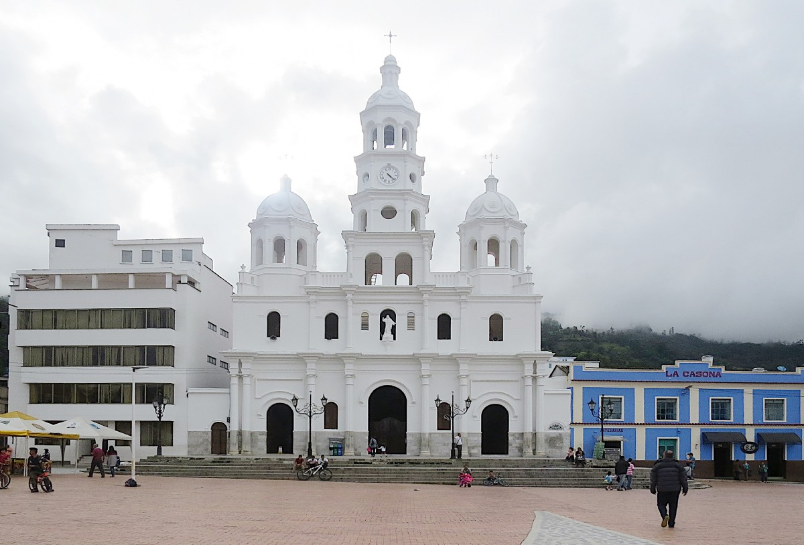

Parque Principal
Málaga, Santander - Colombia
Espacio Emblemático

Descripción General
El Parque de Málaga, ubicado en el centro del municipio, es un espacio verde fundamental para la vida cotidiana y cultural de la localidad. Este sitio sirve como punto de encuentro, lugar de recreación y conexión con la naturaleza, enmarcado por paisajes montañosos que realzan su belleza.
Características del Parque
Ubicación Central
Situado en el corazón de Málaga, fácil acceso para residentes y visitantes.
Espacio de Encuentro
Ideal para paseos, reuniones comunitarias y descanso.
Entorno Natural
Rodeado por la geografía montañosa típica de la región andina.
Cultura Viva
Escenario de expresiones culturales, música y tradiciones locales.
Contexto del Municipio
Málaga es reconocida por su riqueza natural, cultural y agroindustrial. Se destaca por la producción de frutas como piña, palma de aceite y naranja, así como por sus tradiciones artesanales. En las afueras, se fabrican productos como ladrillos y cal hidratada. Además, es un destino turístico que ofrece actividades como parapente y visitas al Parque Nacional del Chicamocha.